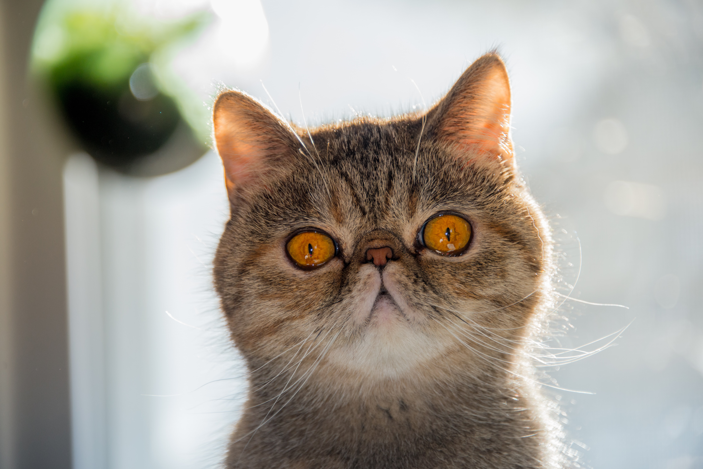

Domestic cats are valued by humans for their sociability and ability to kill rodents.
 We know about 60 breeds. The cat has a strong flexible body, quick reflexes,
We know about 60 breeds. The cat has a strong flexible body, quick reflexes, sharp teeth and retracted claws adapted to kill small prey.
sharp teeth and retracted claws adapted to kill small prey.Domestic cats are descended from African wild cats and are found around the world in human company. Wild cats are found throughout continental Europe, Southwest Asia and the savannah regions of Africa and elsewhere.
Cats are carnivores and a cat can be either a domestic cat, a farm cat or a wild cat living in freedom. 
Domestic cats are valued by humans for their sociability and ability to kill rodents. We know about 60 breeds. The cat has a strong flexible body, quick reflexes,
sharp teeth and retracted claws adapted to kill small prey.